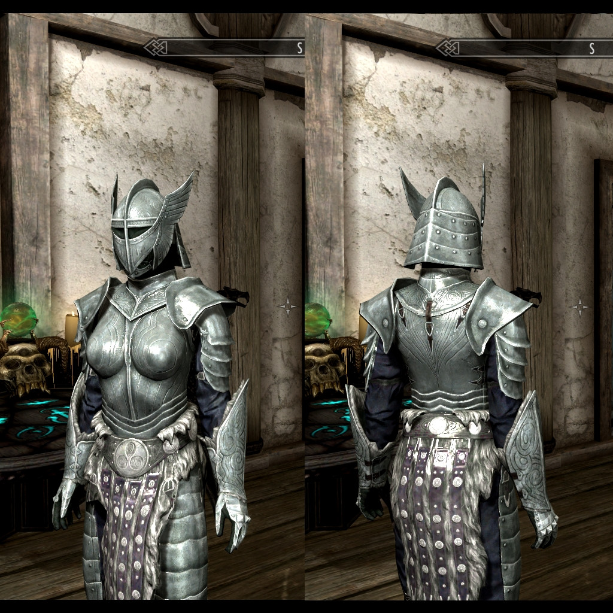
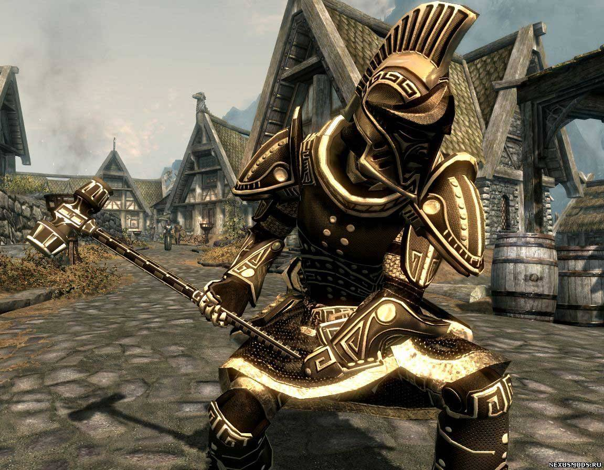
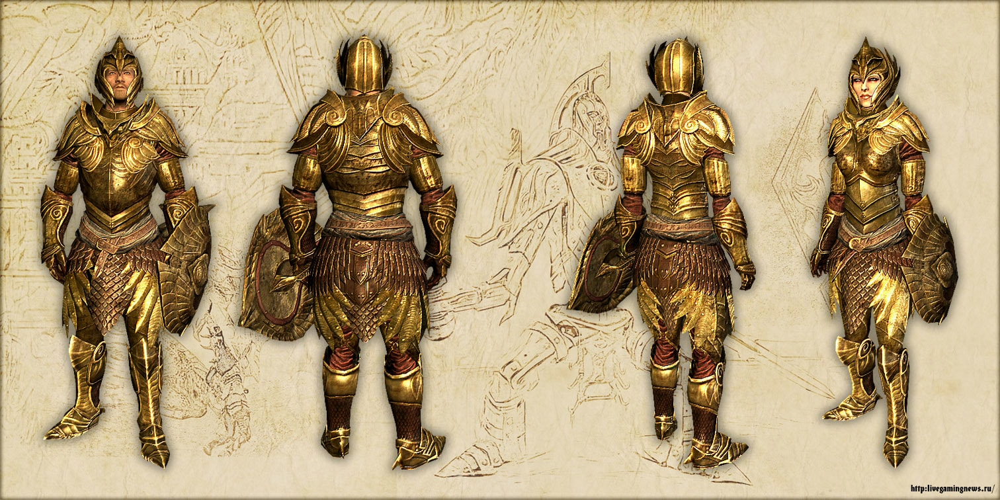
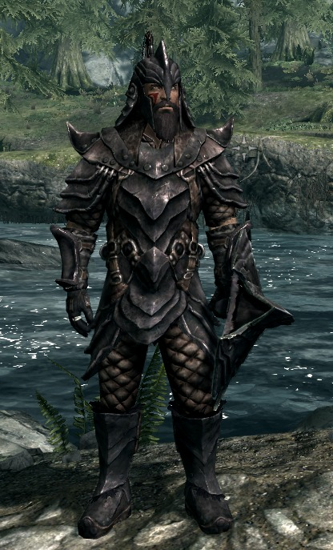
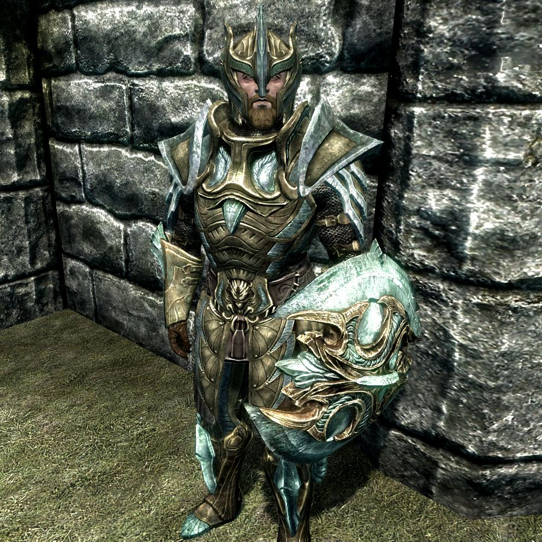
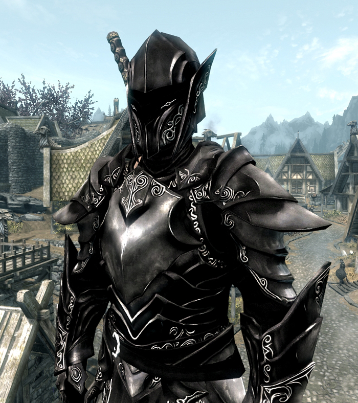
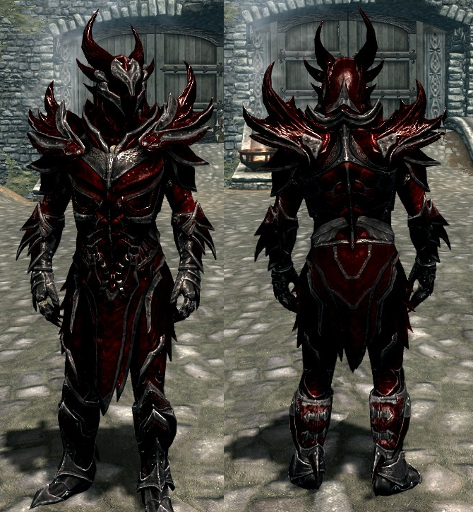
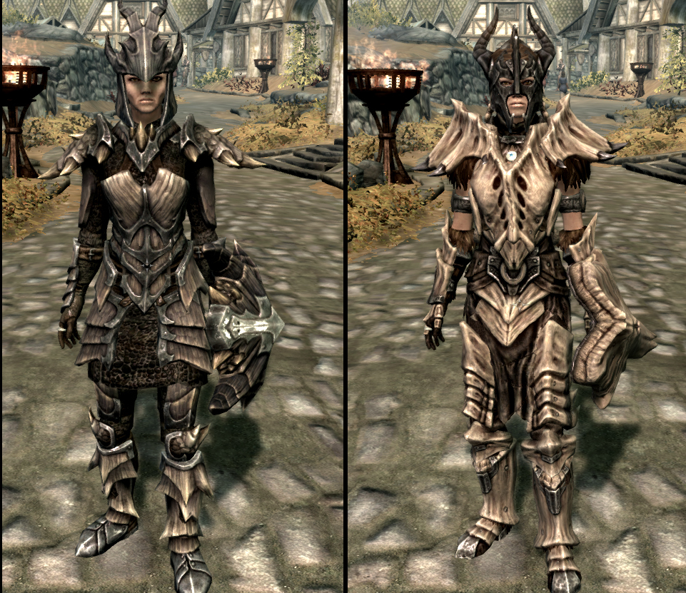

|
|
The Elder Scrolls V Skyrim: Оружие/БроняНа этой странице вы узнаете об оружие и броне, которые можно выковать в кузне. Во всём Скайриме можно выковать оружия и броню 10 видов Стальные оружия и доспехиЭто самые первые и самый обычные оружия и доспехи, они не отличаются никакой особенностью или качеством. Доступны с 20 уровня кузнечного дела. Для изготовления понадобится: стальные слитки и полоски кожи Двемерские оружия и доспехиДвемерский доспех — комплект тяжёлой брони. Эти доспехи являются особенностью двемерской расы, так как именно двемеры разработали их конструкцию и в совершенстве овладели технологией их изготовления. Доспех по характеристикам являет собой нечто среднее между стальным и стальным пластинчатым доспехами, также практически аналогичен улучшенному костяному доспеху. Его могут носить наёмники и воры, которых Довакин может встретить в пути, начиная, примерно, с 12 уровня, независимо от расы. Доступны с кузнечным делом 30 уровня. Для изготовления двемерских брони и оружия нужно: двемерские, стальные и железные слитки, а также полоски кожи. Эльфийские оружия и доспехиЭльфийский доспех — комплект лёгкой брони. Доспех по характеристикам являет собой нечто среднее между кожаным и хитиновым доспехом.Для изготовления доспеха в кузнице требуется способность «Эльфийские доспехи», которую возможно взять при уровне 30 навыка «Кузнечное дело». Из материалов для создания доспеха нужны слитки железа и очищенного лунного камня, а также кожа, как целым куском, так и порезанная на ремни. Для изготовления золочёного варианта кирасы вместо кожи нужны слитки ртутной руды. Эльфийские оружия и доспехиОрочий доспех — комплект тяжёлой брони. Эти доспехи являются особенностью орочьей расы, так как именно орки разработали их конструкцию и в совершенстве овладели искусством их изготовления. Доспех по характеристикам являет собой нечто среднее между тяжёлым хитиновым и нордским резным доспехами.Для создания орочьего оружия в кузнице, как и для создания элементов доспеха, требуется уровень 50 навыка «Кузнечное дело» и способность «Орочьи доспехи». Также для изготовления оружия нужны такие материалы, как орихалковые слитки, железные слитки и полоски кожи. Стеклянные оружия и доспехиСтеклянный доспех — комплект лёгкой брони. Доспех по характеристикам схож с нордским резным доспехом. Для изготовления доспеха в кузнице требуется способность «Стеклянные доспехи», которую возможно взять при уровне 70 навыка «Кузнечное дело». Также для создания доспеха нужны слитки лунного камня, очищенного малахита и полоски кожи. Эбонитовые оружия и доспехиЭбонитовый доспех — комплект тяжёлой брони. Доспех по характеристикам схож с нордским резным доспехом. Для ковки доспеха в кузнице требуется способность «Эбонитовые доспехи», которую возможно взять при уровне 80 навыка «Кузнечное дело». Также для создания доспеха нужны эбонитовые слитки и полоски кожи. Даэдрические оружия и доспехиДаэдрический доспех — комплект тяжёлой брони. Уровень защиты, которую предоставляет доспех, зависит от уровня развития навыка ношения тяжёлых доспехов и наличия способностей из соответствующего ему древа. Имеет наивысшую базовую защиту в игре, даже выше, чем у драконьего панцирного доспеха. Элементы даэдрического доспеха создаются из эбонита, свойства которого изменены применением сердца даэдра. Дизайн даэдрической брони, по сравнению с предыдущими играми серии, остался прежним — такая же демоническая «внешность» и торчащие шипы. Некоторые элементы брони выполнены из сплошных кусков эбонита. Кроме того, доспехи светятся красным в темноте, но на скрытность это не влияет. Для магов доступен альтернативный метод создания элементов даэдрического доспеха — в кузнице атронахов. Преимущества этого способа в том, что тут не важен уровень навыка «Кузнечное дело». Преимущества Ношение полного даэдрического комплекта повышает вероятность успешной проверки на запугивание (+ 10 %). Даэдрическая броня имеет самые высокие базовые параметры в игре среди встречающихся комплектов тяжёлых доспехов. Несмотря на то, что даэдрические доспехи тяжелее, чем драконья броня, способности сглаживают эту ситуацию. При использовании зелья, повышающего навык кузнечного дела на 130 % (это возможно без применения консольных команд) и выше, можно получить просто невероятный уровень защиты персонажа. Недостатки При экипированном доспехе на персонажа могут напасть Дозорные Стендарра из-за своей непримиримой враждебности ко всему, связанному с ненавистными им существами, но если пройти квест Молаг Бала, они нападать не будут. Чтобы выковать даэдрические доспехи, навык «Кузнечное дело» должен быть равен или выше 90. Также требуется способность «Даэдрические доспехи». Необходимыми материалами являются сердца даэдра, полоски кожи и эбонитовые слитки. Драконьи оружия и доспехиДраконьи доспехи — комплекты лёгких и тяжёлых доспехов. При установленном дополнении The Elder Scrolls V: Dawnguard становится доступен также набор оружия из этого снаряжения. Создание элементов драконьих доспехов в кузнице требует наличия способности «Драконьи доспехи», доступной при стопроцентном развитии навыка «Кузнечное дело» и наличии любой из двух способностей: «Стеклянные доспехи» или «Даэдрические доспехи»  |